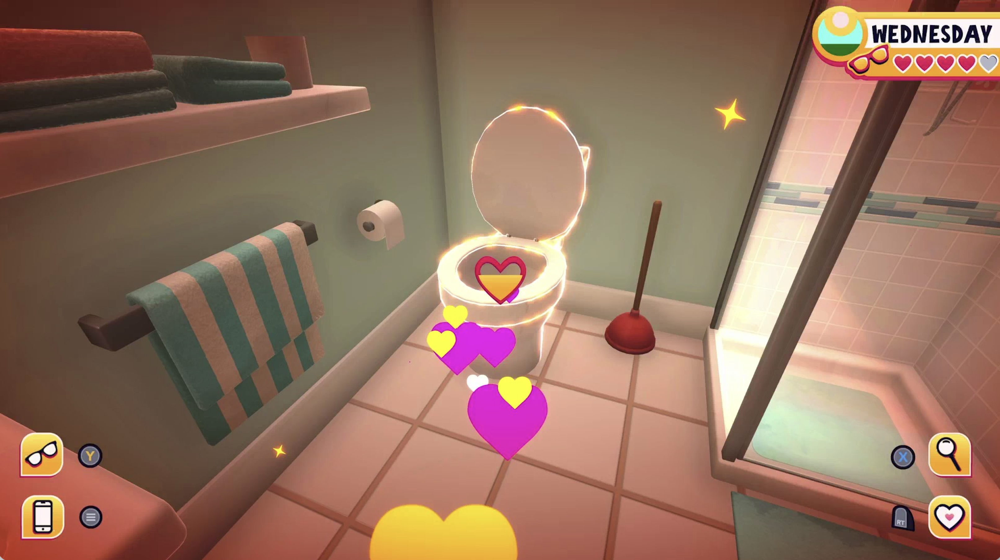
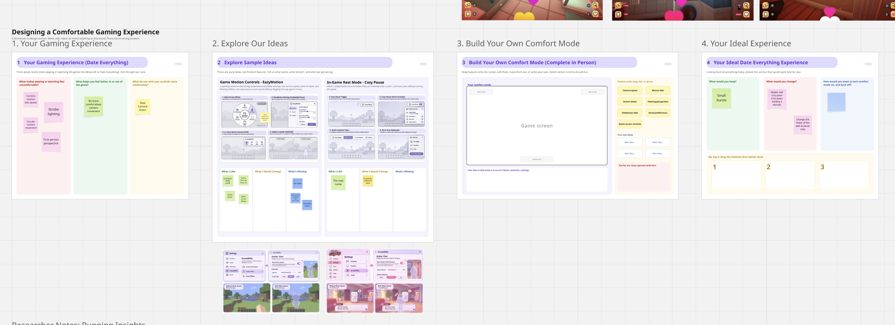
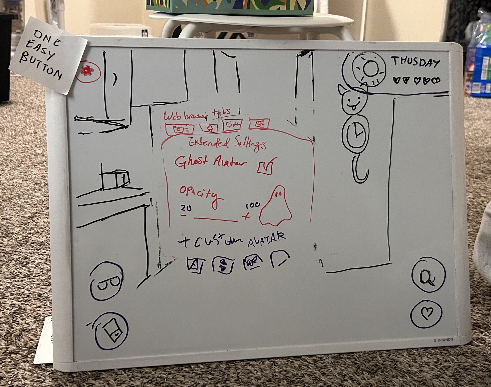
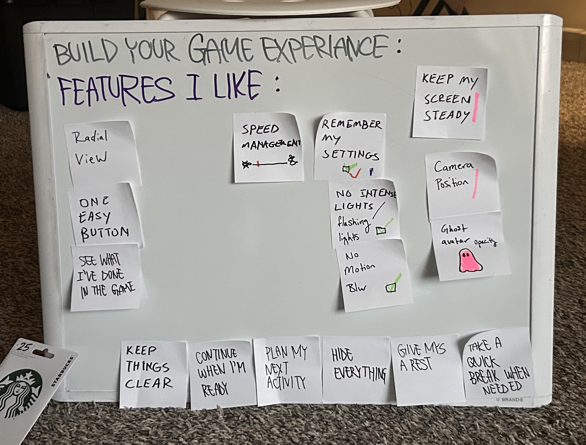
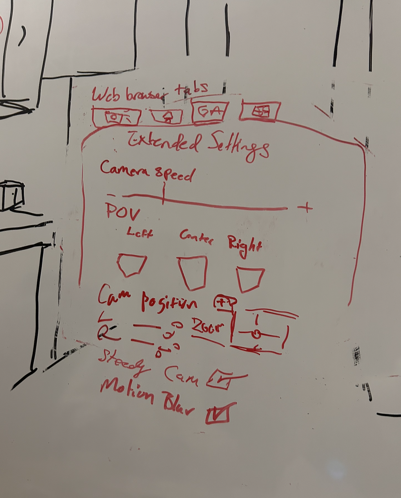
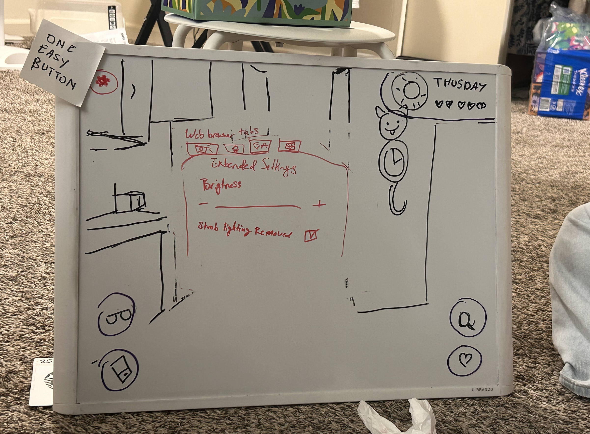
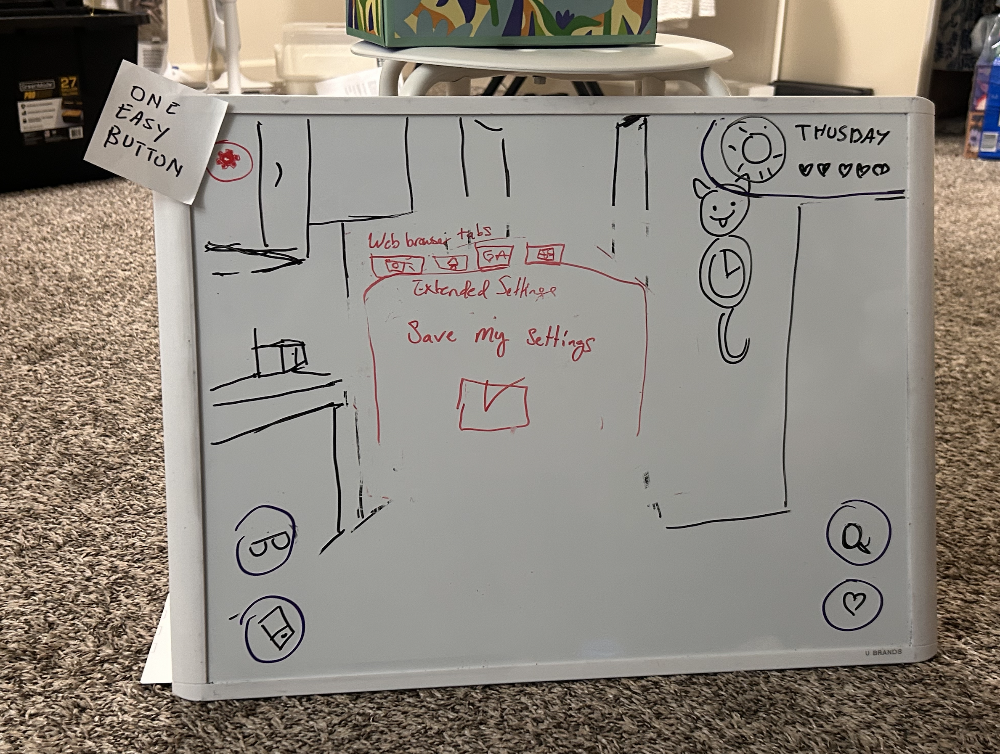

Date Everything!
Designing Comfort for Motion-Sensitive Players
A codesign project with a player who loves immersive 3D games but gets motion sick from them. Together we shaped a set of camera and comfort settings, then built a playable prototype.
With Jasmine Voon and Oluwanifemi Orekoya

Overview
Accessibility here means more than reducing discomfort. It means freedom to play the games you love.
Problem
Fast or unpredictable camera movement makes our participant nauseous, so she picks games her body can handle instead of the ones she wants.
Approach
An interview, then a codesign session where she chose a concept, listed features and sketched her ideal settings.
Outcome
“Comfort Edition,” a playable prototype of Date Everything! with her requested camera and comfort settings.
How might we make camera settings and viewing perspectives accessible and customizable for motion-sensitive players, so they can enjoy more games and play comfortably with others?
Understanding Our Participant
A semi-structured interview that changed what we thought the project was about.
Starting with transportation, ending with games
Our participant is a woman in her late 20s with lifelong motion sickness that worsened after concussions. We began by asking about travel and phone use, since riding in a car with her phone made symptoms worse.
I prepared the interview materials, and Jasmine led the conversation. Open-ended questions revealed that gaming was what she cared about most, so we followed her lead and changed the project’s focus.
Takeaway: asking about specific games gave better answers than asking about accessibility in general.
-
She picks games by what her body can tolerate
She loves quirky, imaginative games, including Date Everything!, but avoids immersive camera work, and defaults to steadier games like Stardew Valley.
-
She already makes her own fixes
Slower camera speed, a third-person view, less screen movement. But these options are not always available.
-
Settings must be easy to find and remembered
Re-adjusting every session takes time away from the game.
-
It also affects who she can play with
She wants to share games with the children in her life, but camera movement stops her.
Codesign Session
Our participant helped decide what to build, not just react to it.
Four activities, one decision-maker
We ran a 60-minute session on a shared Miro board. It moved from her experience, to our ideas, to her own design, and we avoided VR, flashing effects and fast-moving demos that could make her feel unwell.
- Your gaming experience. She named what makes games uncomfortable (camera motion that is too quick, strobe lighting, first-person view) and wished she could slow the camera down.
- Explore our ideas. She reviewed two concept boards, EazyMotion and Cozy Pause, and marked what she liked, would change, and found missing.
- Build your own comfort mode. She dragged feature cards onto a game screen, added ideas of her own and sketched where the controls should live.
- Your ideal experience. She picked what to keep, what to change and her top three features.

She chose EazyMotion
We offered two ideas and let her pick. She chose motion controls over a rest mode because she doesn’t like to take breaks: she wants to keep playing comfortably, not stop.
Takeaway: comfort should come from adjustable settings, not interruptions.
[Add one verbatim quote from her when you have it.]
EazyMotion
Game motion controls: camera speed, viewpoint and motion effects the player can adjust.
Cozy Pause
An in-game rest mode that offers a calm break when the player needs one.
The ghost avatar, shown in the game’s own style
To make EazyMotion concrete, we mocked up one of its ideas in Date Everything!’s look: a ghost avatar, a semi-transparent version of your character that lets you see yourself in the world, with controls for opacity and camera distance.
What stuck: she carried the ghost avatar into her own sticky notes and sketch, and asked for the opacity control.

Her features, in her words
On a board titled “Build Your Game Experience,” she wrote the features she likes and marked what mattered most. The ticked and starred notes became our shortlist:
Must-haves: remember my settings, no flashing or intense lights, no motion blur, keep my screen steady, camera position, and ghost avatar opacity.
Her rest-related notes (“give me a rest,” “take a quick break when needed”) point to a future direction, even though she chose EazyMotion first.

One easy button, one settings menu
We drew a demo of the game screen. She added her own “one easy button” in the corner, which opens an Extended Settings panel, and sketched what should be inside, one group at a time. This showed us exactly how much control she wants and where she expects to find it.



Comfort Edition Prototype
Turning her sketches into something playable.
Built with Claude, guided by her requests
I turned our session notes and her sketches into prompts and generated the game prototype with Claude, then checked the result against what she drew. Each setting traces back to something she asked for.
Try the prototype- Slower, steadier cameraCamera speed, Steady cam
- Camera positionPOV, height, distance, zoom
- No motion blurMotion blur off
- No intense or flashing lightsStrobe becomes a steady glow
- Ghost avatar opacityOpacity 20–100%
- Remember my settings[Confirm saving works]
Settings that preview live
Changes show behind the settings window right away, so she can see the effect before leaving the menu.
Click inside the game to play. Move with W A S D, open settings with Esc. Open in a new tab for the full screen.
Next Steps & Reflection
We haven’t tested the prototype with her yet, and that is the next step.
Test it with her
The next session will have her play the prototype to check whether the settings reduce discomfort and are easy to find. We plan to look at:
[Edit: comfort during a short play session, how quickly she finds the settings, whether saved settings carry over.]
- Test the prototype
Does it feel comfortable, and are the controls where she expects them?
- Revisit Cozy Pause
Her rest-related sticky notes suggest ideas for a gentle, optional rest mode.
- Try other players
Check whether the same settings help other motion-sensitive players.
Her priorities, not our assumptions, set the direction: she wanted control and freedom, not breaks.
What I learned
Letting the participant redirect the project from transportation to gaming gave us a better problem. Using Claude let me turn her sketches into something playable quickly, but I checked every setting against her drawings.
[Add one thing you’d do differently, e.g. shorter interview questions.]